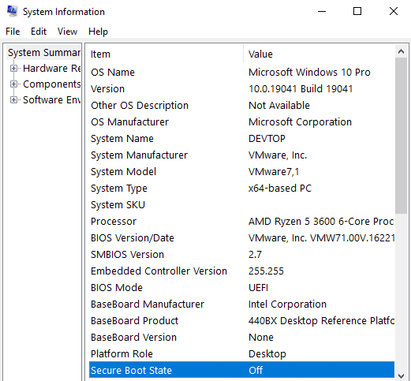
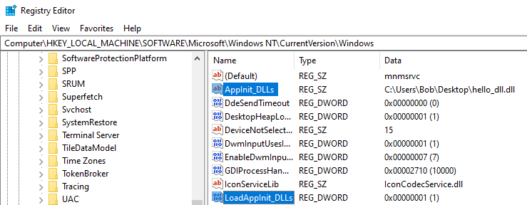
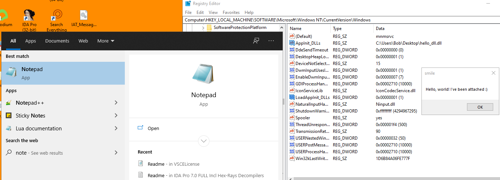

# AppInit_DLL
•
https://gamehacking.academy/lesson/16#Injecting%20DLLsAppInit_DLL is a registry key and a Windows feature.
https://docs.microsoft.com/en-us/windows/win32/win7appqual/appinit-dlls-in-windows-7-and-windows-server-2008-r2It's a mechamism that loads all DLLs specified in
AppInit_DLL to be loaded into every process on startup.
On Windows 10, it requries Secure Boot to be disabled (check with System Information).
It's located in the registry.
There are 2 registry values to set:
•
AppInit_DLLs - this is a comma separated list of DLLs to inject
•
LoadAppInit_DLLs - when set to
1, AppInit is enabled and DLLs will be injected. when set to
0, it's disabled
With a DLL specified in
AppInit_DLLs and
LoadAppInit_DLLs set to
1, I see my DLL (that says hello) run when I start Notepad.
